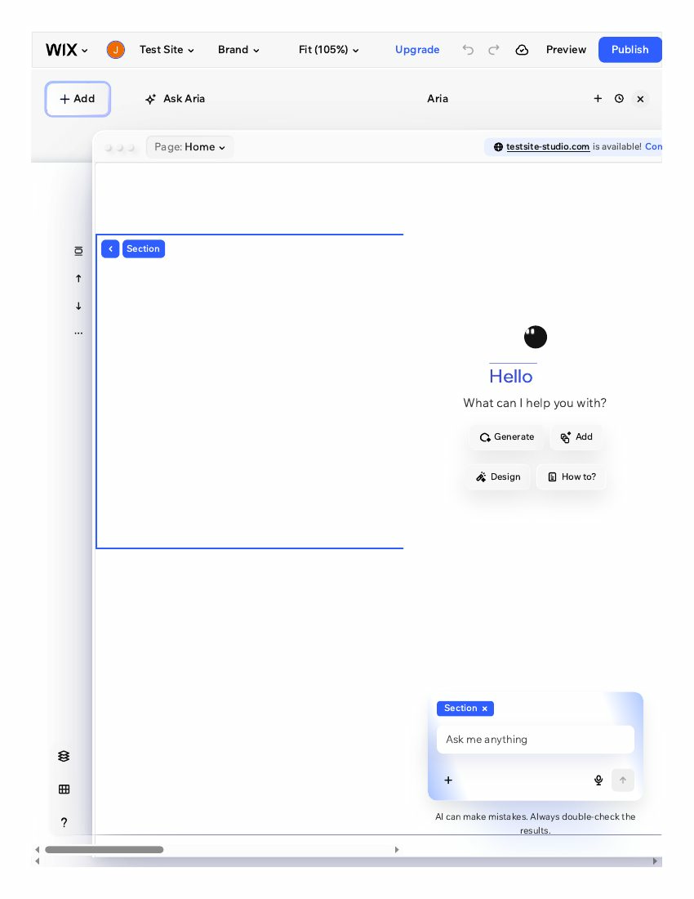
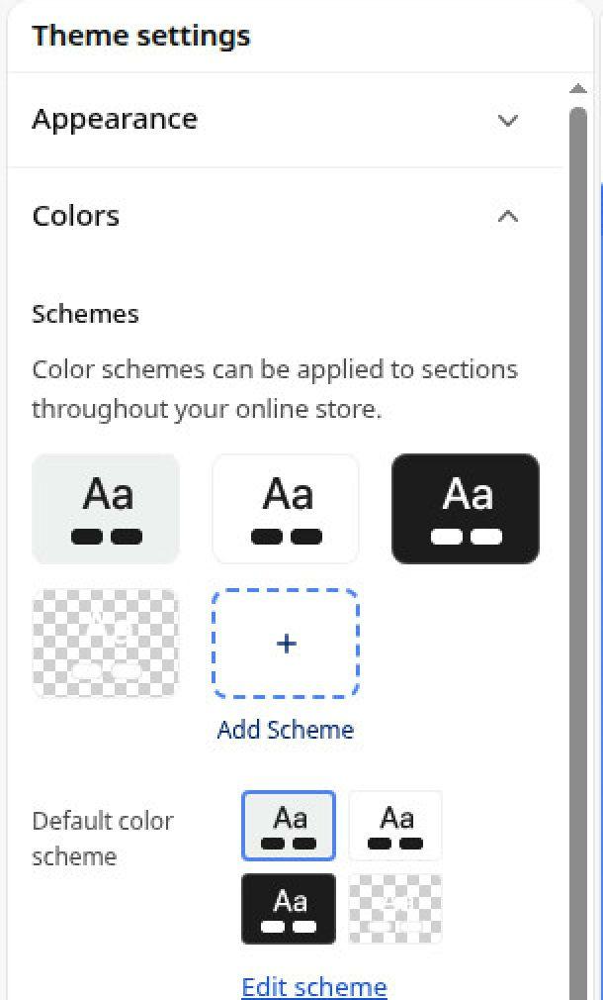

The Journal · Piece one · November 2026
I paid $1,250 for a website. Then I built a better one myself for $350. This is the story behind the reviews on this site: a one person product brand, told honestly. The brand is never named here, on purpose.
I run a watch microbrand on my own. When I started, the product was mine: I designed it. Website building was where I was cold. I had never built one. What I had was a product in development, a list of things the site needed to do, and the strong suspicion that doing it badly myself would cost more than paying someone.
So I did the sensible sounding thing. I researched website builders, picked Wix largely on price, had a go at building it myself, and found it harder than the adverts suggest. Somebody suggested Upwork. I picked one of the reasonably priced freelancers, judged on price and portfolio, and paid $1,250 for a full website build.
Let me be fair to everyone in that paragraph, because this is not a story about being ripped off. The freelancer did the work. The site went live, it looked respectable, and there were no near misses or problems worth reporting. The branding, which I bought separately as a fixed price package, logo, letterheads and email templates, was quick, built properly from my input, and I still use that logo today. Some of the best money I have spent on the whole project.
The Wix site did not even survive untouched until the rebuild. The problem was email. The list had moved to Klaviyo, and linking the Wix website to Klaviyo never worked properly: Klaviyo is built around Shopify, connects to Shopify deeply, and to Wix only thinly. The forms and the list never joined up the way they were supposed to, and I was the one maintaining the gap. So the marketing stack had already chosen its platform, and it was not the one my website was sitting on.
The realization was simple. One platform, doing the whole job, beats two platforms doing half each.
And within the year I replaced the website anyway.
Here is the honest diagnosis, and it took me a while to say it out loud: the Wix site was limited because I was. I had briefed a stranger to build a thing I did not understand, for a business that did not exist yet and a product that was not finished. The site that came back was a fair reflection of the brief. Vague in, vague out.
One fairness note, because Wix has not stood still since. The editor I used was the classic drag and drop one. In January 2026 Wix launched Harmony, a new editor built around an AI agent called Aria, which drafts a site from a conversation before you touch anything. That is the editor in the screenshot with this piece, and it is the one a novice starting today would meet. It might have made my first attempt easier. It would not have changed where I ended up, because the ending was decided by Klaviyo, not by the editor.

Meanwhile I kept landing on other small brands' websites and noticing the same thing: the ones that looked genuinely premium, the ones that felt like a real shop rather than a brochure, were mostly on Shopify, built on good themes. Shopify themes just looked so good. And my product is a physical thing that will be sold online, which is the exact job Shopify exists for. Wix was the cheaper door into the wrong room.
So I did the thing I should have done at the start. I bought a premium Shopify theme, Prestige, for $350, and built the site myself.
There is a learning curve. I will not pretend otherwise, because pretending otherwise is what got me a $1,250 invoice the first time. Shopify has its own way of organizing a shop, its own settings, its own vocabulary, and the first evenings were slow.
But it is basically easy if you take the time to learn it properly, and the deal on offer is a good one: a premium looking site for minimal money, if you put the time in. The theme does the design heavy lifting. My job was words, photographs, product details and patience. And because I built every page myself, I understand every page. When something needs changing, I change it. No ticket, no freelancer, no invoice. That control is worth more than the saving.

One thing flattened that learning curve, and it is worth naming on a site that reviews AI tools for a living. When I got stuck, and I got stuck plenty, I would screenshot the screen I was on and ask ChatGPT what I was looking at. It would guide me to the right Shopify setting, the right menu, the place to click, or explain how a page should be structured. Then I would go and do it. When something went wrong, I asked again, and it pointed me at what I had done. No course, no ten hour tutorial series, no trawling forums for a post almost about my problem. Just my exact problem, on my actual site, answered at the moment I had it. It saved me a lot of time, and it is a large part of why building the site myself was realistic at all.
The renders tell the same story, by the way. The product images were also done through Upwork, separate hires, and they improved over time as I learned what good looked like and briefed it better. Same lesson, smaller invoices: the output improved when my understanding did.
Total spent getting to the website I have today: $1,250 for the first build, $350 for the theme, plus the branding package, which earned its keep and does not count as waste. Call it $1,600 of website spend to arrive at a site that a $350 theme and some evenings would have produced on day one.
Was the first $1,250 pure waste? Not quite, and this is the nuance I would want if I were reading this before spending anything. That first site taught me what I actually needed: which pages mattered, what a product page has to do, where visitors were supposed to go and what they were supposed to do when they got there. I could not have briefed the Shopify build, even to myself, without it. I paid tuition. I just paid more of it than I needed to.
If I were starting again tomorrow, the order would be:
Because it is the reason this site exists. Every review here is written from the buyer's side of the counter, by someone who has paid the novice tax more than once and kept the receipts. When we say a tool is easy, we mean easy for a person who began as a complete novice. When we ask what a tool costs, we mean in total, including the rebuild.
The website feeds an email list, and the list is where the next part of the story lives: three different email platforms, one growing list, and a move I made for features and later reversed on cost. That is piece two.
No affiliate links in this piece. Wix, Shopify and Klaviyo are named because they are what happened, not because anyone pays us. The stack checklist our own setup follows is free: The Small Business Stack Checklist. The full set of tools the brand ended up on is written up in The Solopreneur Online Stack.